Zinedine Zidane
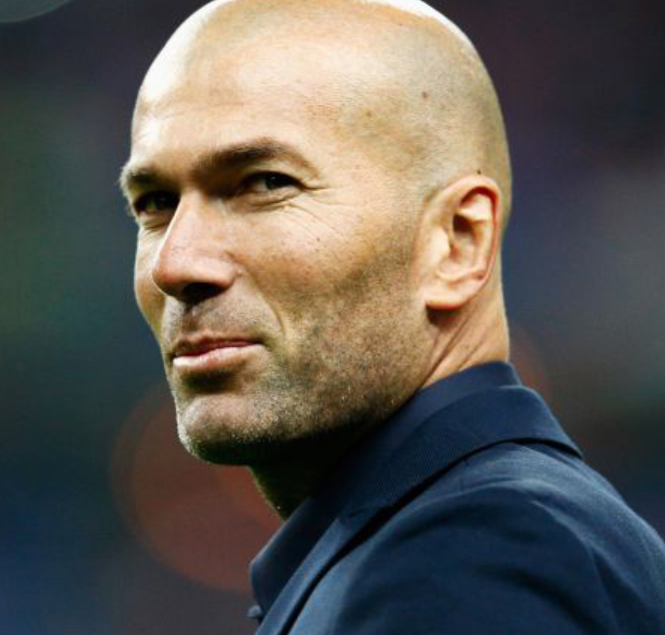Légende du football français et mondial en tant que joueur et entraineur. La preuve que l'on peut être heureux sans cheveux.
Sources-

- 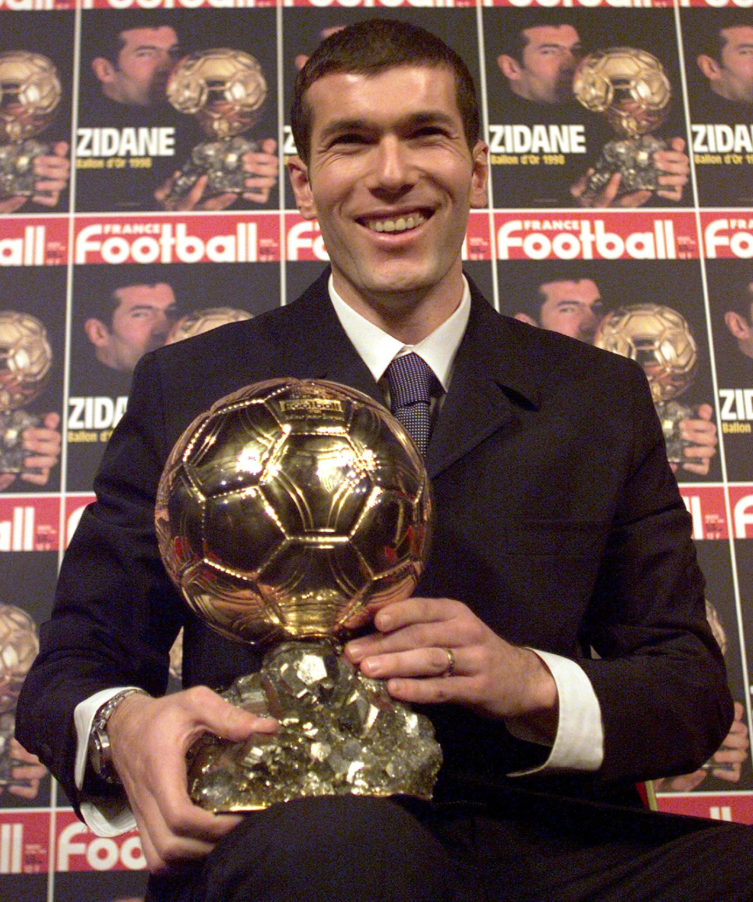
- 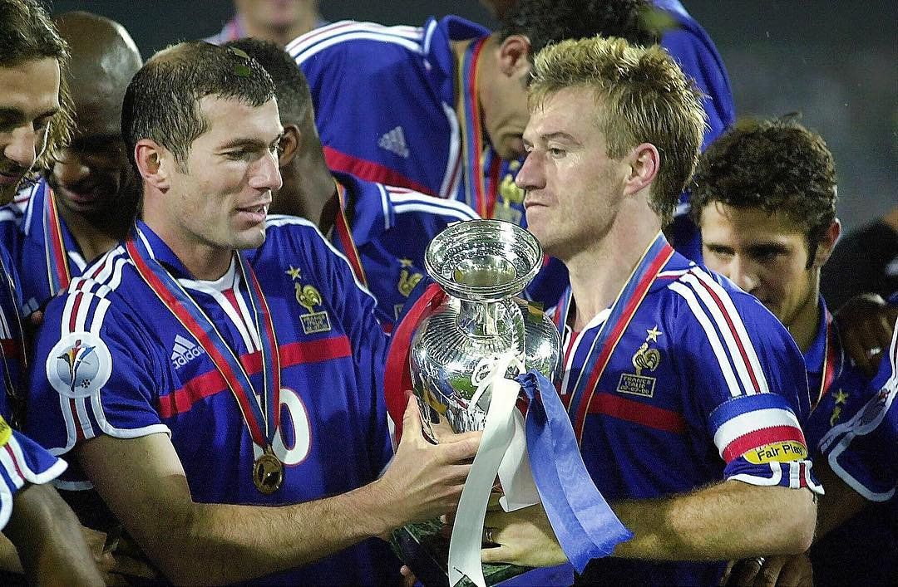
- 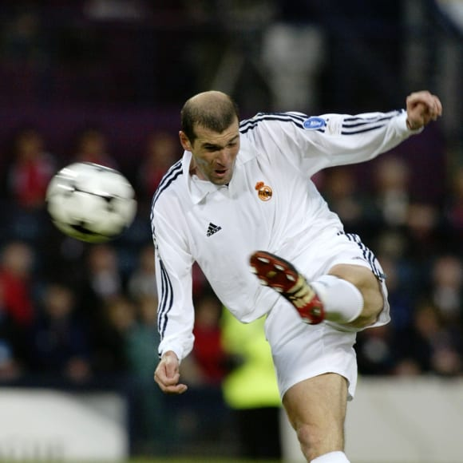
- 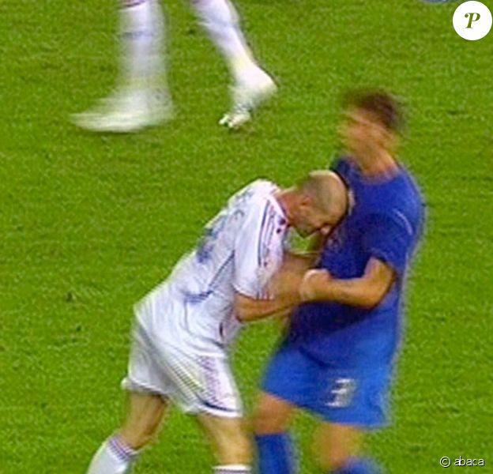
Clubs
- 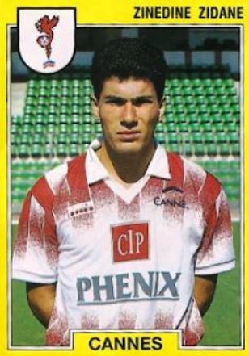 🇫🇷 AS Cannes : 1988-1992 / 71 matchs pour 6 buts
- 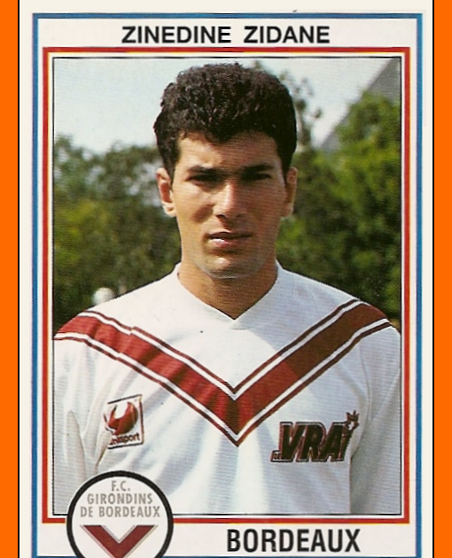 🇫🇷 Girondins de Bordeaux : 1992-1996 / 179 matchs pour 39 buts
- 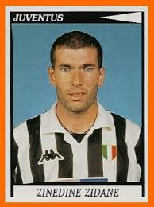 🇮🇹 Juventus de Turin : 1996-2001 / 212 matchs pour 31 buts
- 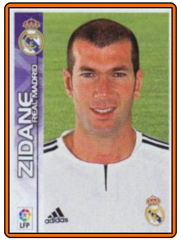 🇪🇸 Real Madrid CF : 2001-2006 / 227 matchs pour 49 buts
Sélection
- 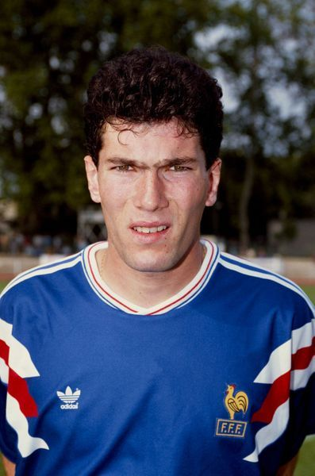 🇫🇷 Equipe de France Espoir : 1990-1994 / 20 matchs pour 3 buts
- 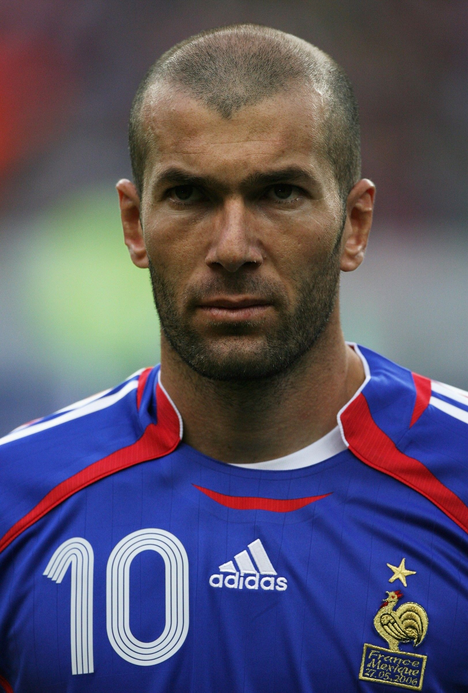 🇫🇷 Equipe de France : 1994-2006 / 108 matchs pour 31 buts
Palmares du joueur
- 🌎 International :
- -Coupe du Monde : champion en 1998 ; finaliste en 2006
- -Coupe d'Europe : champion en 2000
- 🇪🇺 Européen :
- -Ligue des champions : champion en 2002 ; finaliste en 1997, 1998
- -Coupe UEFA : finaliste en 1996
- -Supercoupe d'Europe : champion en 1996, 2002
- 🇮🇹 Italien :
- -Serie A : champion en 1997, 1998 ; vice-champion en 2000; 2001
- -Supercoupe d'Italie : champion en 1997 ; vice-champion en 1998
- 🇪🇸 Espagnol :
- -Liga : champion en 2003 ; vice-champion en 2005, 2006
- -Coupe d'Espagne: vice-champion en 2002, 2004
- -Supercoupe d'Espagne : champion en 2001, 2003
- 🏅 Peronnel
- -Meilleur espoir de ligue 1 : 1994
- -Meilleur joueur de ligue 1 : 1996
- -3e du Ballon d'or 1997
- -Ballon d'or : 1998
- -Meilleur joueur de l'Euro 2000
- -2e du Ballon d'or 2000
- -Meilleur joueur de Serie A : 2001
- -Meilleur joueur de Liga : 2002
- -Meilleur joueur de la Coupe du Monde 2006
Entraineur
- 🇪🇸 Real Madrid Casilla : 2014-2016 / 26v 17n 14d
- 🇪🇸 Real Madrid CF : 2016-2108 / 104v 17n 16d
- 🇪🇸 Real Madrid CF : 2019-... / 44v 17n 14d
Palmares de l'entraineur
- 🌎 International :
- -Coupe du Monde des clubs : champion en 2016, 2017
- 🇪🇺 Européen :
- -Ligue des champions : champion en 2016, 2017, 2018
- -Supercoupe européenne : champion en 2016, 2017
- 🇪🇸 Espagnol
- -Liga : champion en 2017, 2020 ; vice-champion en 2016
- Supercoupe d'Espagne : champion en 2017, 2020
Anecdotes
- 1) Il s'est vu infligé 14 cartons rouges au cours de sa carrière.
- 2) Il détient le record de but en final de la coupe du Monde, 3.
- 3) Son but d'une reprise de volé en final de la Ligue des champions 2002 à été élu le plus beau but de l'histoire de la compétition.
- 4) Le dernier match de sa carrière est la défaite en final de la Coupe du Monde 2006 où il se fait expluser suite à son célèbre coup de boule.
- 5) Son match face au Brésil en 1/4 de final de la Coupe du Monde 2006 fait partie des plus grande performance de l'histoire du football d'après le journal L'Équipe qui lui a attribué la note de 10/10.
- 6) C'est le seul entraineur de l'histoire du football à avoir gagné 3 Ligues des champions d'affilé.